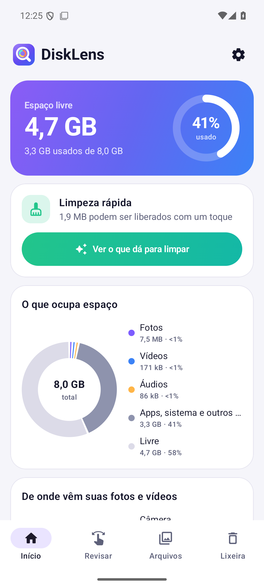
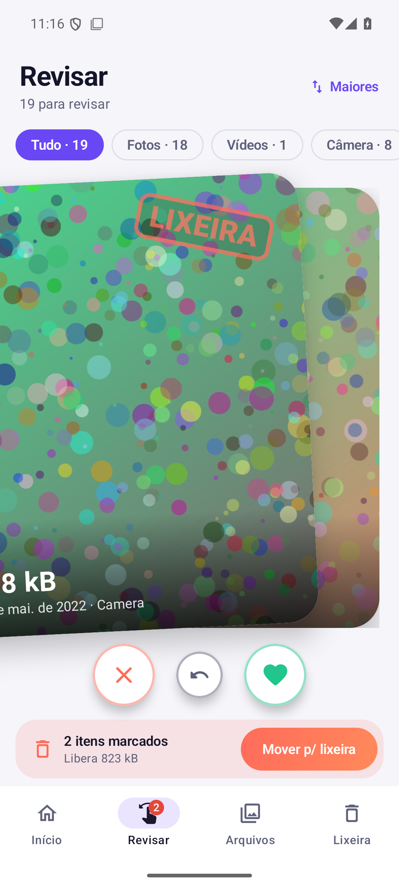
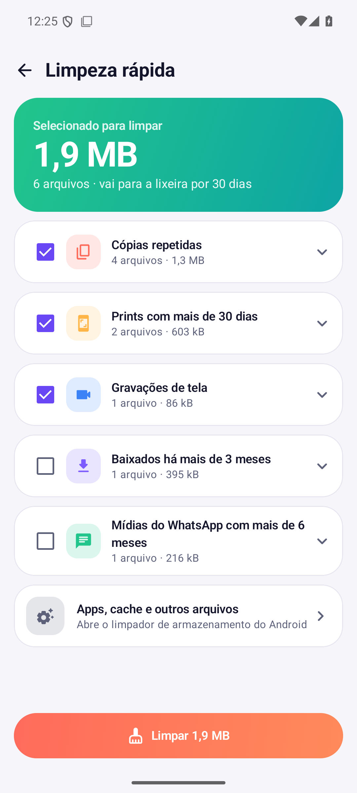

Libere espaço no celular arrastando para o lado.
Veja o que ocupa o seu armazenamento, revise fotos e vídeos estilo Tinder, encontre cópias repetidas e limpe tudo com um toque. Tudo é analisado no próprio celular.



O que o DiskLens faz
- Início: espaço livre e usado, com gráficos do que ocupa o armazenamento.
- Limpeza rápida: cópias repetidas, prints antigos, gravações de tela e mais, de uma vez.
- Revisar: arraste para a esquerda para mandar para a lixeira e para a direita para manter.
- Arquivos: maiores, repetidos, antigos, pastas e áudios.
- Lixeira: usa a lixeira do Android; o que você apaga fica 30 dias e pode ser restaurado.